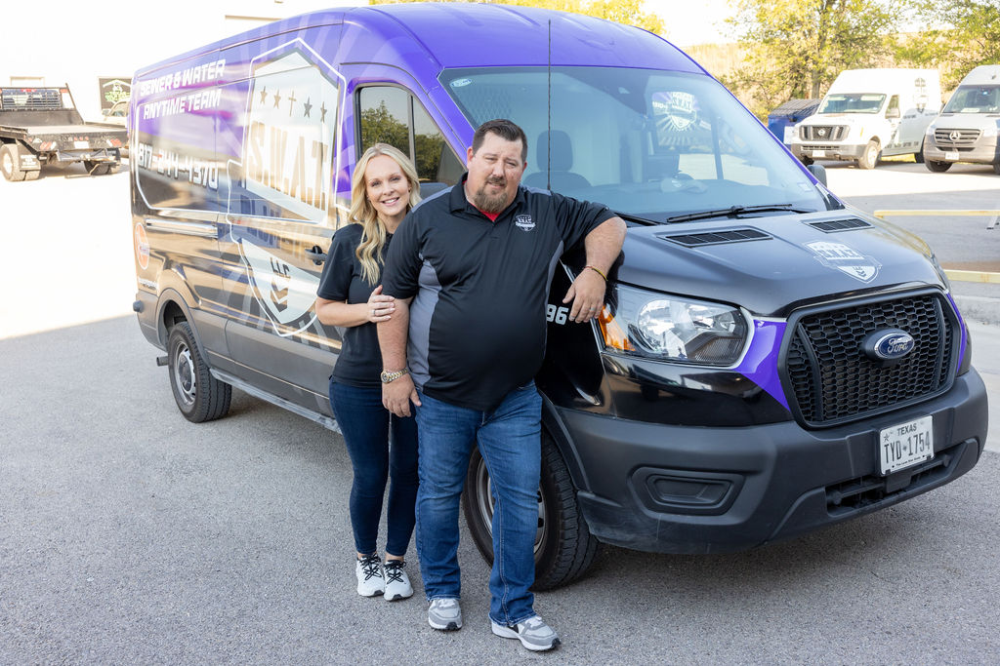

When disaster strikes your home or business—whether it’s a burst pipe, storm damage, fire, or mold—the first call you make can shape your entire recovery process. You want a team you can trust, one that understands both the urgency of the moment and the importance of restoring more than just your property. That’s where a family-owned, local company like SWAT Restoration makes all the difference.
Large, corporate restoration companies often treat jobs like transactions. At SWAT Restoration, you’re a neighbor—not just another invoice. Being family-owned means we care personally about every project, because we know the people we serve live and work right here in our community.
When storms or flooding hit North Texas, you want a company that already understands the unique challenges of the area. From hailstorms in Weatherford to flash flooding in Fort Worth, we’ve seen it all—and we know how to handle it. That local expertise means faster response times and better solutions that fit your specific needs.
A family-owned company is built on reputation. Every review, every referral, every handshake matters. At SWAT Restoration, we’ve built our business on integrity and trust. That means you’ll always get straightforward communication, honest answers, and quality work we’re proud to stand behind.
By choosing a local company, your dollars stay right here in North Texas. We reinvest in our community by hiring local talent, supporting local causes, and serving families and businesses just like yours. When you call SWAT Restoration, you’re not just restoring your home—you’re strengthening your community.
At the heart of SWAT Restoration are Dillon and Danielle Patterson, who started SWAT Plumbing and Restoration with one goal: to treat customers like family. That family-first approach carries through every project, from the technicians who respond to your call to the project managers who walk with you through insurance and reconstruction.
When disaster hits, don’t settle for a company that sees you as just another job. Choose a partner that’s local, accountable, and rooted in family values. At SWAT Restoration, we’re proud to be North Texas’s first responders for disasters, bringing both professional excellence and a personal touch to every restoration project.
If your home or business ever needs restoration, trust the family-owned team that’s here for you every step of the way: SWAT Restoration.